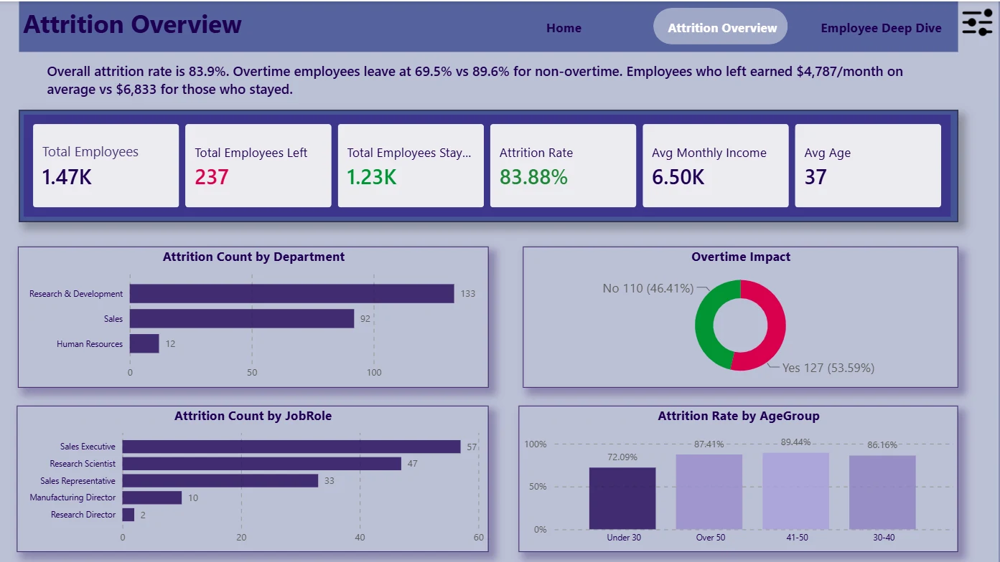

Saudi Banking Credit
Exploring Saudi Arabia's lending landscape through official SAMA data.
Financial analytics / Power BI
Explore live reportBusiness intelligence & data analytics
I'm Bedoor. I build thoughtful Power BI reports, bringing a finance perspective to the stories behind the numbers.
Analysis · Design · Storytelling
Exploring Saudi Arabia's lending landscape through official SAMA data.
Financial analytics / Power BI
Explore live report
A focused executive view of revenue performance for a football merchandise retailer.
Executive reporting / Power BI
Explore live report
A visual journey through the LEGO worlds that disappeared and those that endured.
Data storytelling / Power BI
Explore live report
Understanding employee attrition through workforce and job satisfaction data.
People analytics / Power BI
Explore live reportBuild and maintain Power BI dashboards for invoice status, aging, and financial KPIs. Consolidate data with Power Query and present reporting insights to finance and management teams.
Analyzed aviation message data using Python and Excel, developing scripts and automated reports to classify records and support operational reporting.
I'm Bedoor Ayadh Almareni, a Computer Science graduate from the University of Jeddah. My focus is business intelligence and data analytics.
Working with invoices and financial reporting has shaped how I approach data. I enjoy asking practical questions, finding patterns, and designing reports that make the answers easier to understand.
Have a project or an opportunity in mind?